Microsoft Xbox One (Posse de Rafael Lovizetto)
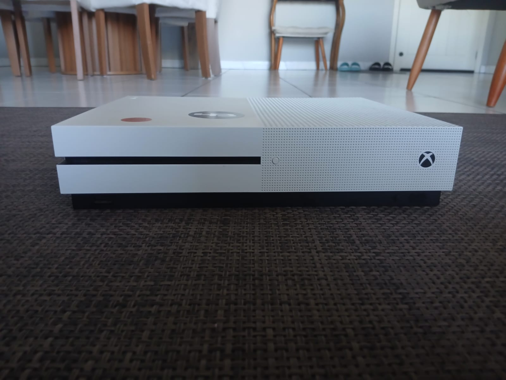
Xbox One
O Xbox One é um console doméstico desenvolvido pela
Microsoft e lançado em 2013. Ele é o sucessor do
Xbox 360 e faz parte da oitava geração de videogames.
O console foi desenvolvido como uma plataforma de
entretenimento além dos jogos, integrando aplicativos,
reprodução de mídia, serviços online e televisão em
sua proposta inicial.
O Xbox One utiliza uma arquitetura baseada em componentes
da AMD, combinando uma CPU x86-64 com uma GPU integrada
e memória DDR3 compartilhada pelo sistema.
Uma das principais características da plataforma foi
sua integração com o Xbox Live, permitindo partidas
online, comunicação entre jogadores, distribuição
digital e outros serviços conectados.
Lançamento e História
O Xbox One foi apresentado oficialmente pela Microsoft
em maio de 2013, meses antes de seu lançamento comercial.
A apresentação inicial deu grande destaque aos recursos
de entretenimento e integração com televisão, além dos
jogos e serviços do Xbox Live.
A proposta inicial acabou gerando diversas mudanças
posteriormente anunciadas pela Microsoft, especialmente
relacionadas à conexão obrigatória à internet e ao uso
de jogos em mídia física.
Durante sua vida comercial, a família Xbox One recebeu
diferentes revisões de hardware, com alterações de
tamanho, consumo de energia, armazenamento e desempenho.
Mercado Brasileiro
O Xbox possui presença oficial no mercado brasileiro
desde a geração do Xbox original e o Xbox One continuou
essa trajetória.
O console foi comercializado oficialmente no Brasil
em diferentes versões e recebeu localização de diversos
serviços e jogos para o público brasileiro.
O Xbox Live também possuía suporte ao mercado brasileiro,
permitindo acesso a partidas online, conteúdos digitais,
aplicativos e outros recursos da plataforma.
Durante a geração, o Brasil também recebeu diferentes
versões do console, incluindo o Xbox One S e o Xbox One X.
Contexto Histórico
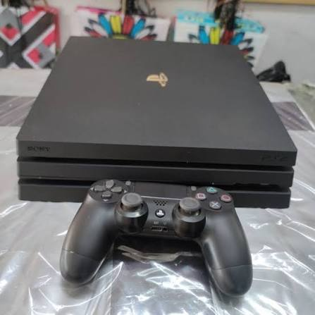
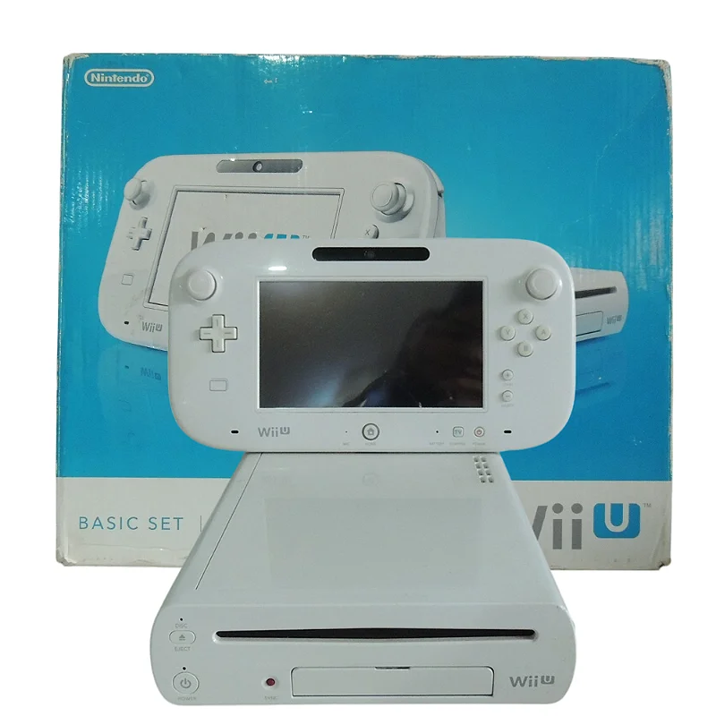
O Xbox One pertence à oitava geração de consoles,
geração que também contou com PlayStation 4,
Nintendo Wii U e posteriormente Nintendo Switch.
A geração foi marcada pelo crescimento dos serviços
digitais, jogos distribuídos por download, atualizações
constantes e maior integração dos consoles com a internet.
No caso da Microsoft, o Xbox One também representou
uma mudança na estratégia do ecossistema Xbox, com
maior integração entre console, serviços digitais e,
posteriormente, computadores com Windows 10 e Windows 11.
Durante os anos seguintes, a Microsoft passou a enfatizar
cada vez mais a ideia de um ecossistema Xbox que não
dependesse exclusivamente da compra de um console específico.
Jogos e Acessórios
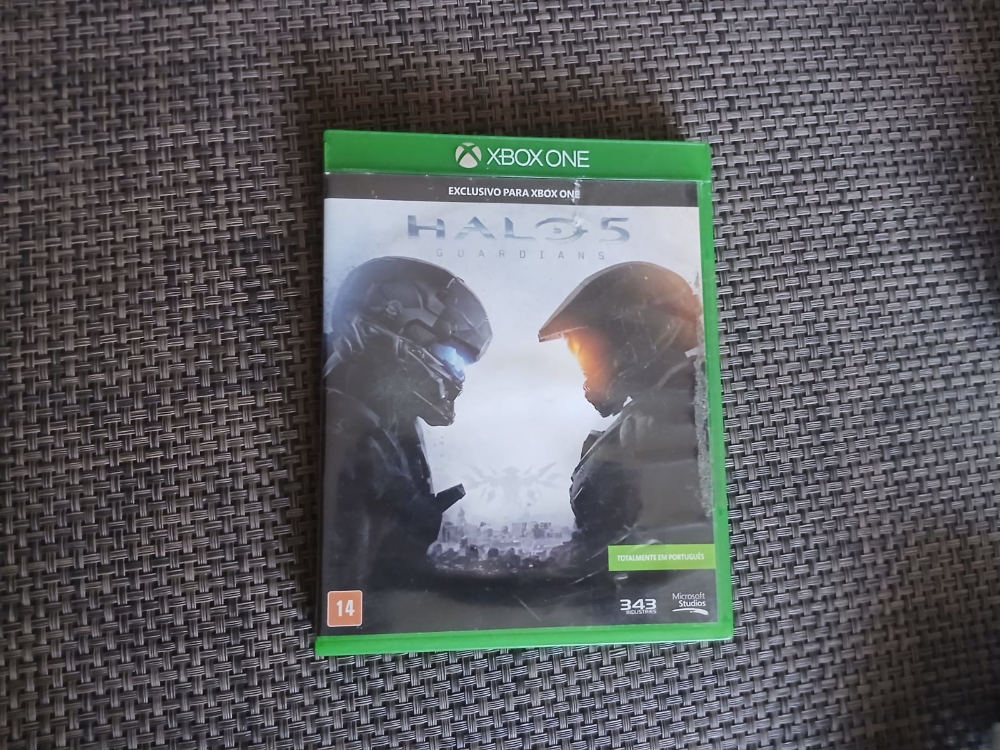
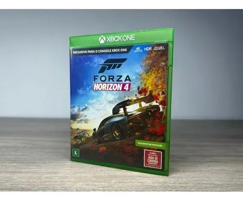
O Xbox One recebeu uma grande biblioteca de jogos
desenvolvidos pela Microsoft e por outras empresas.
Entre os títulos associados à plataforma estão
Halo 5: Guardians, Forza Horizon 4, Forza Motorsport 7,
Gears 5, Sunset Overdrive, Sea of Thieves,
Ori and the Blind Forest e Ori and the Will of the Wisps.
O console também recebeu grandes lançamentos
multiplataforma como Grand Theft Auto V, Red Dead
Redemption 2, Minecraft, Resident Evil 7 e
The Witcher 3: Wild Hunt.
Entre os acessórios mais conhecidos estão o Kinect,
controles Xbox Wireless Controller, Xbox Adaptive Controller,
Headset, Play & Charge Kit e diferentes versões de
volantes e periféricos compatíveis.
Kinect para Xbox One
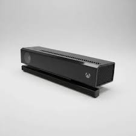
O Kinect para Xbox One foi uma evolução do sistema
de câmera e reconhecimento de movimentos introduzido
na geração anterior.
O periférico utilizava câmeras e sensores para
reconhecer movimentos corporais e comandos de voz.
Diferentemente do Xbox 360, o Kinect não permaneceu
obrigatório no funcionamento do Xbox One após as
mudanças realizadas pela Microsoft na estratégia
do console antes do lançamento.
Modelos e Variações
O Xbox One recebeu diferentes modelos oficiais ao longo
de sua vida comercial.
O modelo original possui um design grande e utilizava
uma fonte de alimentação externa.
Em 2016, a Microsoft apresentou o Xbox One S, uma
revisão menor e mais eficiente que também introduziu
suporte a HDR e uma unidade Blu-ray Ultra HD.
Em 2017, foi lançado o Xbox One X, uma versão de maior
desempenho destinada a oferecer resolução e qualidade
gráfica superiores em jogos compatíveis.
Também foi lançado o Xbox One S All-Digital Edition,
modelo sem unidade de discos físicos.
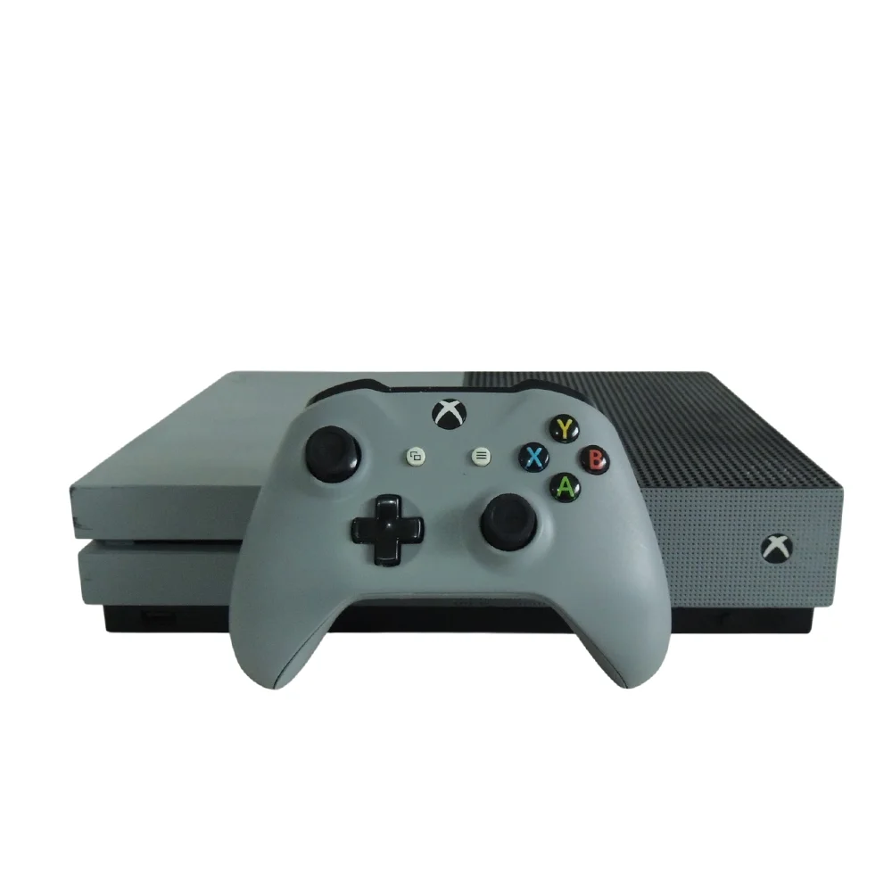
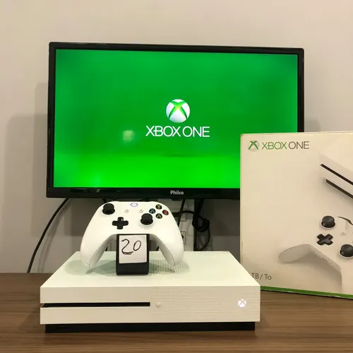
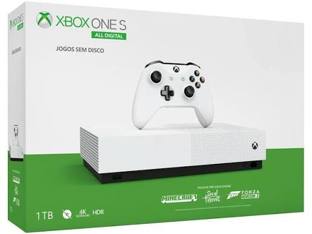
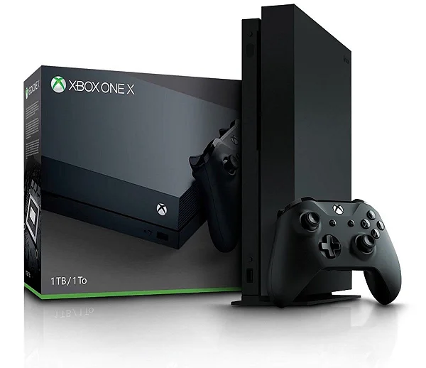
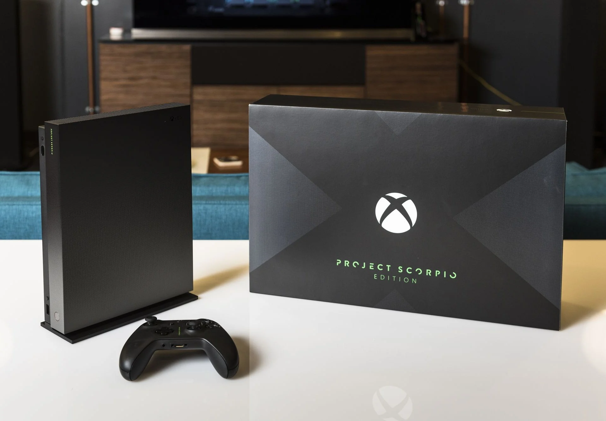
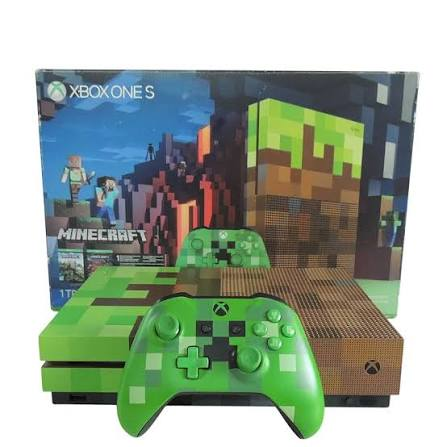
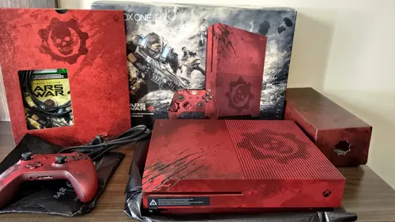